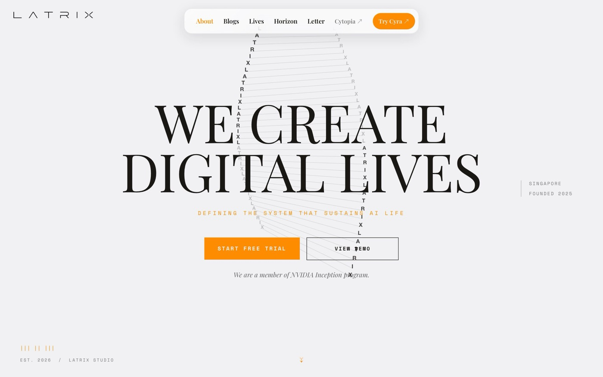

Design Teardowns
从真实界面出发，重建可验证的设计证据。
01/CAPTURE
Start with the real interface.
先记录真实界面，再形成判断。
MeasuredInferred
Current case
Shopify Editions Winter ’26
Web · Launch system
View teardown

查看 Latrix 设计拆解三维场景暂时不可用；案例与档案库仍可正常浏览。
Case archive
21 case studiesScroll to advance